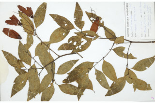

Images :



| Habit : | Trees ca. 20 m tall. |
| Leaves : | Leaves simple , alternate , spiral ; stipules caducous ; petioles ca. 2 cm long; lamina 5.5-10 x 2-4 cm, ovate-lanceolate , apex gradually acute with blunt tip, base acute , glabrous ; midrib flat above; secondary_nerves ca. 8 pairs, oblique , prominent above; tertiary_nerves closely_horizontally_percurrent . |
| Inflorescence / Flower : | Inflorescence panicles , in axillary fascicles , often 1-3 together, as long as or longer than leaves ; flowers creamy-yellow, ca. 0.6 cm long. |
| Fruit and Seed : | Nut , ca. 1.8 cm long, ovoid or ellipsoid , apiculate , smooth; calyx_accrescent with two longer and three smaller lobes ; seed 1. |